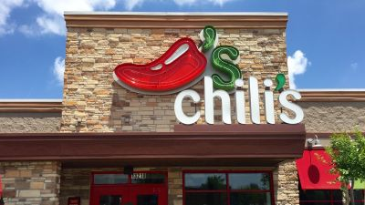
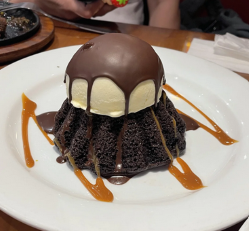
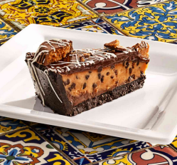
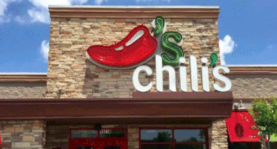

Rating Desserts From Chili's

Via James R. Martin/Shutterstock
Ah, Chili's. Known across the world for its Triple Dipper and $5 margaritas, this restaurant has made quite the name for itself since being founded in 1975. However, I'm not here to discuss its savory food or tasty drinks today. Instead, I want to focus on the establishment's limited line of desserts.
Why is Chili's dessert selection so minimal? Could it be that the items featured on their menu have been perfected to a T? Or, does the chain merely neglect this last course to give more attention to their appetizers, entrées, and sides? Find out below!
Molten Chocolate Cake - ★★★★☆

Via r/PHFoodPorn on Reddit
Chili's molten lava cake is by no exaggeration a chocolate lover's dream. This baked good is to a cupcake what a motorcycle is to a bicycle—it has all the bells and whistles. With a soft chocolate exterior, silky chocolate interior, vanilla ice cream topper, and light chocolate shell, it's no wonder why Chili's offers this cake to guests celebrating birthdays or ordering off its 3 For Me menu. It's definitely the best dessert out of the three that the chain sells, especially considering it's both single-serve and shareable.
Despite being heavily promoted in person and online, the molten chocolate cake has its flaws. For one, its exterior is slightly dry and bland. It's reminiscent of a box cake, which a person shouldn't be receiving for nearly $10. Another problem I have with this treat is that the scoop of ice cream it comes with is simply insufficient. You'll get through half the cake, and your ice cream will already have melted. While these criticisms may seem insignificant, I guarantee they become increasingly relevant and valid the more you eat this Chili's dish, hence its 4/5 star rating.
Peanut Butter Pie made with Reese's®- ★★☆☆☆

Via @chilisqatar on Instagram
At the bottom of this short-lived list is Chili's peanut butter and chocolate pie made with Reese's®. Its redeeming qualities pale in comparison to those of the aforementioned desserts. Still, it's deserving of some praise. One thing this PB&C treat does right is its cocoa crust. Crispy and not too sweet, this foundation is the perfect counter to the pie's overly sugary filling. Another compliment I can give this dish relates to the Reese's® cup that garnishes each of its servings, which I find adorable and satisfying to pop in one's mouth. That's about all the good things I can say about this relatively new item on Chili's menu.
And now for my critiques, which are far and many. As I mentioned above, the filling that comprises the bulk of Chili's peanut butter pie is sickeningly sweet. This becomes awfully apparent within the first three bites of a slice. Instead of receiving a balanced, sweet and salty blend when you order this chocolate and peanut butter dessert, you get a treacly mass that's made worse by its chocolate gnache topping. Speaking of this topping, it truly has no depth; it's chalky and unoriginal. It tastes like Halloween candy, which I suppose is expected of something made with Reese's®. Nonetheless, paying $10 for a small, cheap-tasting slice of pie (that I guarantee you won't finish, at least not enthusiastically) is outrageous and intolerable. Therefore, a 2-star rating is more than fitting for this treat.
Conclusion
So, what did we learn about Chili's desserts? Well, they're definitely not something to write home about. All of them are imbalanced in some way, shape, or form, and they're not the best quality. It turns out this company does value its other courses more than its last one. But, what can you expect from a grill and bar chain?
Perhaps my hopes were too high when trying these Chili's dishes. However, if I'm going to spend my hard-earned money on a sweet treat, it better leave me impressed, satisfied, or both. After all, if I wanted to eat a dry cake, an overbearing cookie, or a saccharine pie, I'd go to Walmart and get either item for $7 dollars or less. Furthermore, I'd get a bigger portion for said price than what I'd get at Chili's.
In conclusion, know your worth! You're better off buying dessert elsewhere or making it yourself than eating it at Chili's. Trust me—if you heed my words, you won't regret it.
